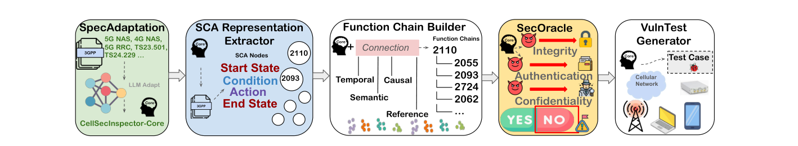
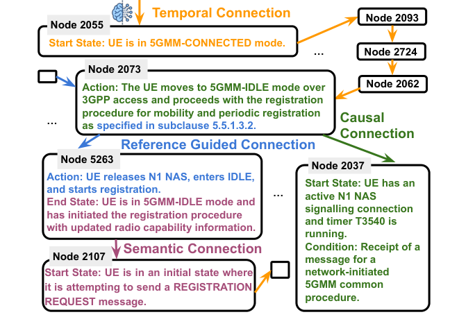
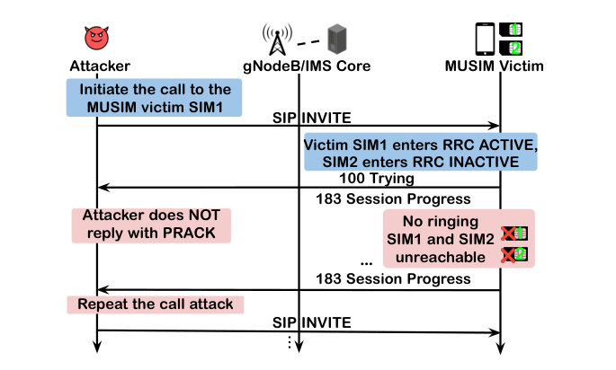
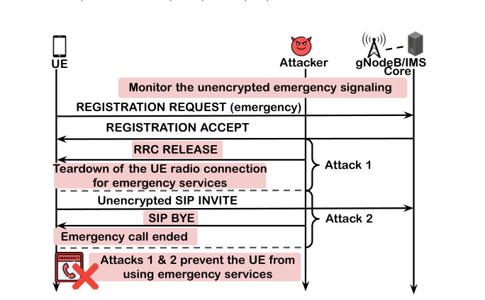

Guan-Hua (Scott) Tu
Associate Professor
Department of Computer Science and Engineering,
Michigan State University
428 S SHAW LN, ROOM 3115
East Lansing, MI 48824-1266
Email: ghtu AT msu.edu
Office: 1124 Engineering Building
Automating Specification Analysis with Large Language Models
- CellSecInspector: Safeguarding Cellular Networks via Automated Security Analysis on Specifications [MobiCom'26]
- Overview of CellSecInspector
- Function chain (Connecting SCA nodes for 5G mobility management through temporal, causal, semantic, and reference connections)
- New vulnerability: Multi-USIM problematic reachability (Repeated calls to SIM1 keep SIM2 of the victim unreachable)
- New vulnerability: Emergency session teardown via forged signaling (Forged RRC RELEASE or SIP BYE terminates the victim's emergency session)
Mobile networks worldwide are built on thousands of 3GPP technical specifications, and equipment vendors and carriers must comply with them. This standardization introduces a systemic risk: a design flaw in a 3GPP specification propagates into all compliant networks and devices, creating threats with global impact. However, manual review by experts is slow, error-prone, and infeasible at scale; a single 5G NAS specification (TS 24.501) alone contains over 981 pages. State-of-the-art automated approaches rely on rule-based parsing or keyword-driven scanning, and suffer from three fundamental limitations: they cannot capture cross-sentence/clause dependencies; their security requirements are handcrafted for specific procedures and do not scale; and they require costly manual updates to keep pace with evolving 3GPP releases. In collaboration with a team led by my former Ph.D. student Tian Xie (now a Tenure-Track Assistant Professor at Utah State University), we develop CellSecInspector, an end-to-end LLM-based framework for the security analysis of 3GPP specifications. It consists of five modules: SpecAdaptation adapts the core model to cellular-network domain knowledge; the SCA Representation Extractor extracts structured state–condition–action (SCA) representations from the specifications; the Function Chain Builder connects scattered SCA nodes into function chains through temporal, causal, semantic, and reference connections; SecOracle checks the chains against 9 foundational security properties under 4 adversarial scenarios, rather than relying on handcrafted, procedure-specific security rules; and VulnTestGenerator automatically generates test cases for candidate violations. For a stringent benchmark, we applied CellSecInspector to the 5G/4G NAS and RRC specifications, among the most heavily scrutinized in the field, as well as selected sections of TS 23.501 and TS 24.229. It discovered 43 vulnerabilities: it rediscovered all 36 previously reported vulnerabilities, compared with 22 for the state-of-the-art tool Hermes, and uncovered 7 previously unreported ones, including multi-USIM problematic reachability, emergency session teardown via forged signaling, vulnerable DNS-based PLMN discovery over non-3GPP access, privacy exposure via over-disclosed VoIMS signaling headers, exploitable CS-fallback initiation, an access trap via the access barring factor, and a rogue base station RRC RESUME blackhole. In expert evaluation, 98.92% of the SCA nodes extracted by CellSecInspector were judged correct, compared with 25.23% of the FSM transitions extracted by Hermes. GSMA has acknowledged these findings (CVD-2026-0120).



